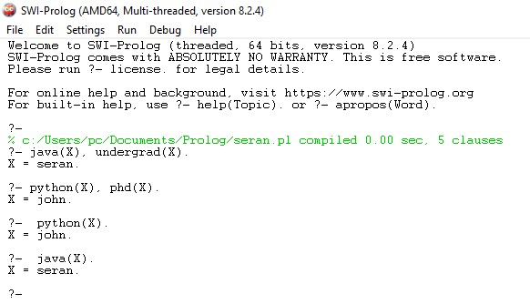
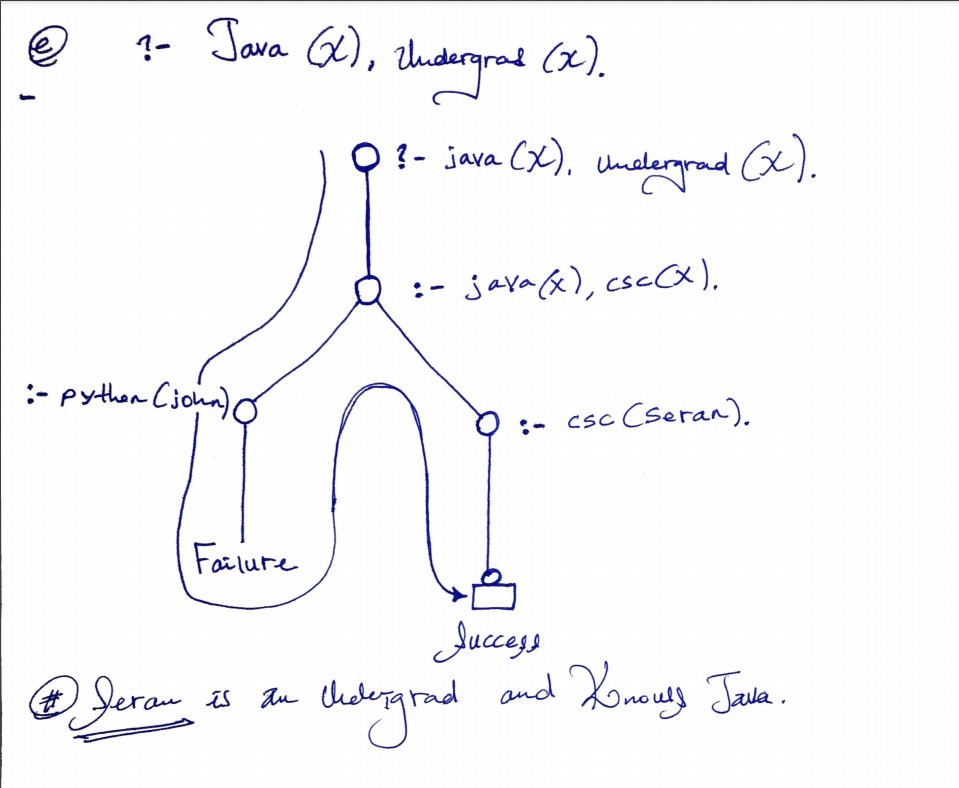

6. (30%) Exercise problem contribution. Using the Example "Every scientist is logician" (see Canvas ExecofProlog example) as a guide, to create a problem with following 4 parts and then give solution to your own problem. Post your problem ((a) - (c)) and solution ((d) - (e)) at your website to share with your classmates. (Note: You may scan/take a picture of hand drawn deduction tree or draw it with a tool digitally)
csc(seran). //Seran is a csc major.
java(seran). //Seran knows java.
python(john). //John knows python
undergrad(seran). //Seran is an undergrad student.
phd(john). //John is a phd student.
(b) (6%) Write a PROLOG representation of the following rule: (your at least 2 rules in English);
knowjava(X) :- csc(X). //Every csc major knows java
student(X) :- undergrad(X). //Every undergrad is a student.
smart(X) :- phd(X). //Every phd is smart
(c) (4%) Write two PROLOG goal statements to search for answers: (also give 2 W questions in English), and at least one of your goal statements should be a conjunction of two subgoals;
?- java(X), undergrad(X). //Who is an undergrad and knows java?
?- python(X), phd(X). //Who is a phd student and knows python?
?- python(X). //Who knows only python?
?- java(X). //Who knows only java
(10%) Run each given query in (c) using Prolog and then post the interactive sessions as part of your solution at your website;
(e) (5%) Show deduction tree that deducing the answer for one of the W (Who, What, Which, What) questions above according to Prolog search strategy (a picture to post).
